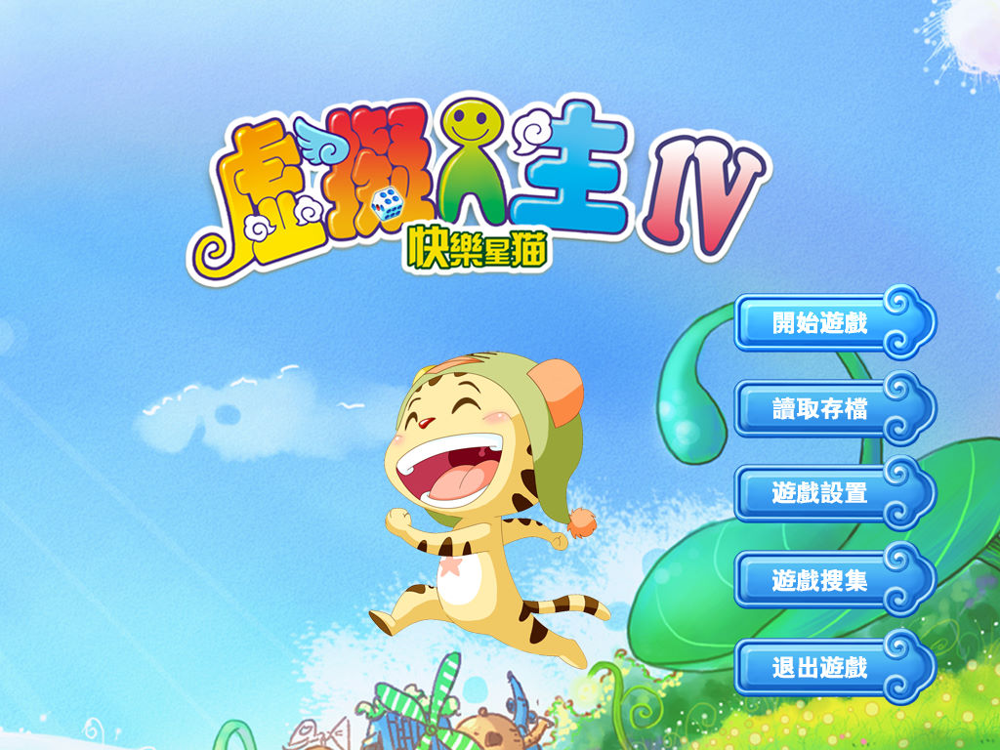
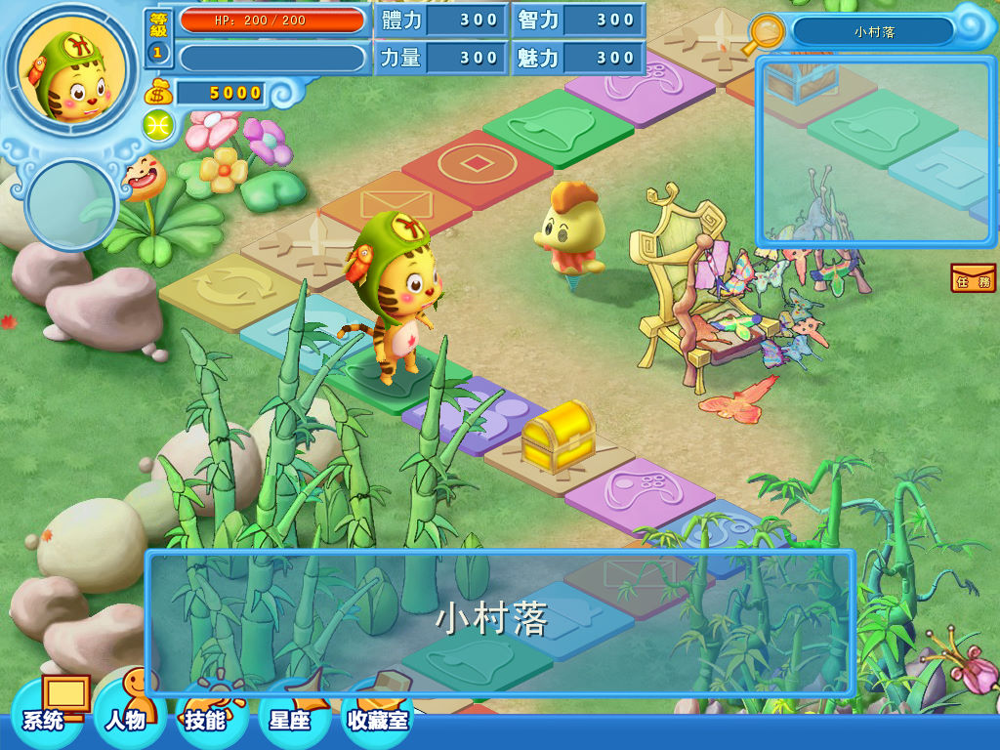

名稱：虛擬人生4快樂星貓 (Virtual Life 4，中文版) 簡介：北京娛樂通2009年出品的大富翁遊戲，台灣由英特衛代理發行 [待補]。   保護：舊版為光碟SecuROM，可使用SRLoader啟動（掛載Bin\VL4.dat，勾選使用單核模式） 新版已取消光碟保護 備註：原光碟為2CD，第二片為純欣賞用的音樂片，與遊戲本體無關。 限制：只能在Win64系統上執行。 備註：遊戲需安裝OpenAL。

